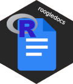

roogledocs: Embed Analysis in Google Docs 
ROOGLEDOCS IS IN BETA TEST.
I CAN ADD UP TO 100 USERS BEFORE I HAVE TO SUBMIT FOR GOOGLE’S REVIEW. PLEASE HEAD TO THE BETA TEST DISCUSSION WITH YOUR GMAIL ADDRESS IF YOU WANT TO PARTICIPATE.
R library to perform limited interactions with Google docs and slides in R via the Java API library. The purpose being to support Google docs as a platform for interactive development and documentation of data analysis in R for scientific publication, although it is not limited to this purpose. The workflow supported is a parallel documentation and analysis where a team of people are working collaboratively on documentation, whilst at the same time analysis is being performed and results updated repeatedly as a result of new data. In this environment updating numeric results, tabular data and figures in word documents manually becomes annoying. With roogledocs you can automate this a bit like a RMarkdown document, but with the added benefit that the content can be updated independently of the analysis, by the wider team.
Installation instructions
roogledocs is not on CRAN and probably will never be as the Java libraries that it uses are bigger than CRAN’s stringent policies. Instead we have a R-universe repository.
roogledocs depends on rJava which in turn depends on having a working Java installation. I recommend installing both those first. The following commands can help you determine if your rJava installation is working:
install.packages("rJava")
rJava::.jinit()
rJava::J("java.lang.System")$getProperty("java.version")Once rJava is working, stable releases of roogledocs can be installed with the following:
# Enable repository from terminological
options(repos = c(
terminological = 'https://terminological.r-universe.dev',
CRAN = 'https://cloud.r-project.org'))
# Download and install roogledocs in R
install.packages('roogledocs')Alternatively unstable development branches can be found here:
# the --no-multiarch option is required on windows.
devtools::install_github("terminological/roogledocs", build_opts = c("--no-multiarch"))Simple usage
# These options control whether roogledocs is disabled globally (useful for testing)
# and where it stores the Google Drive authentication tokens
options('roogledocs.disabled'=FALSE)
options("roogledocs.tokenDirectory"="~/.roogledocs")
paper = roogledocs::doc_by_name("my-new-nature-paper")
paper$updateFigure("/full/path/to/figure-1.png", figureIndex = 1, dpi = 300)Which will authenticate you, create a blank document (or retrieve it if it exists) and updates the first figure in the document, or inserts it at the end if no images exist already.
After some editing of the document and further analysis you are ready for a new version of the figure:
{R} paper$updateFigure("/full/path/to/figure-1-v2.png", figureIndex = 1, dpi = 300)
Which updates the figure leaving the rest of the Google doc content in place. Clearly this can be combined with ggplot to produce a seamless scripted data pipeline, one output of which is a Google doc. This can be executed in RMarkdown, in which case the markdown can be a notebook documenting the code and methodology, and the Google doc is the write up.